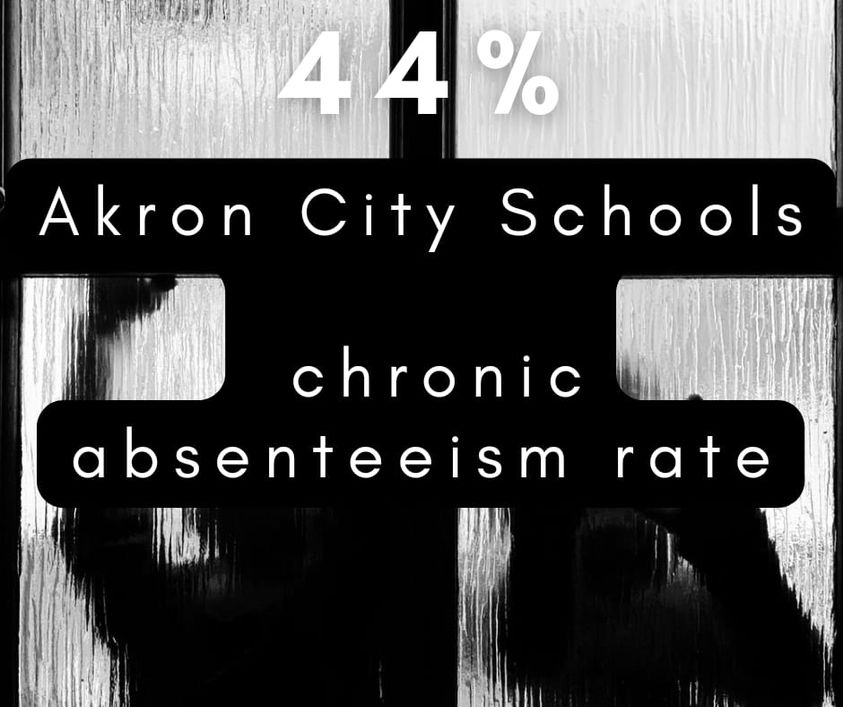

Sage Lewis Facebook Archive: Post 796
Feb 11, 2022 7:35:29am

Mobile uploads
This isn't bad kids or bad families. This is bad city leadership. Akron is a city of hopelessness for nearly half our residents.
Back to Index